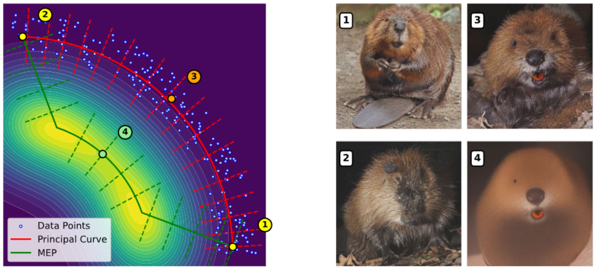
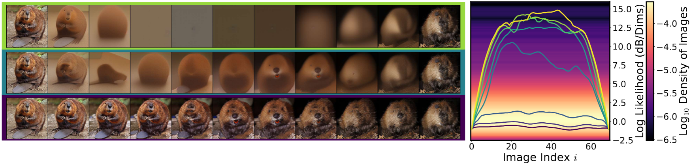
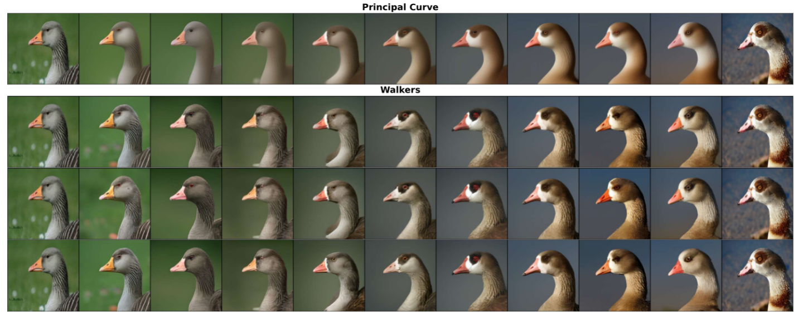
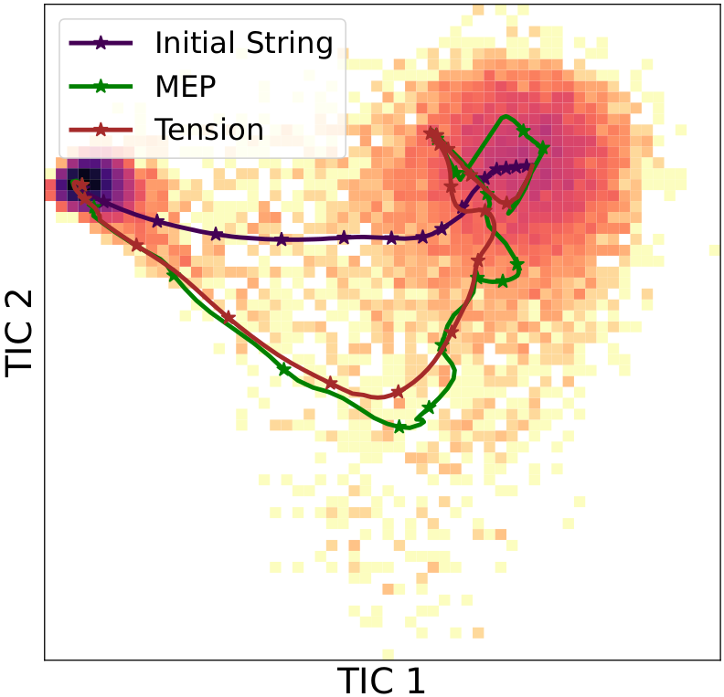
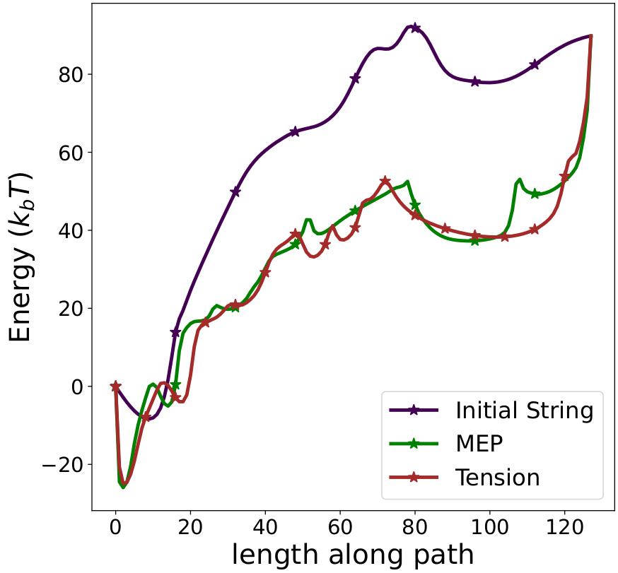
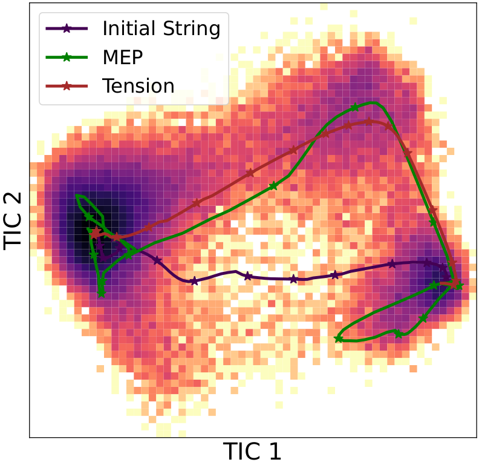
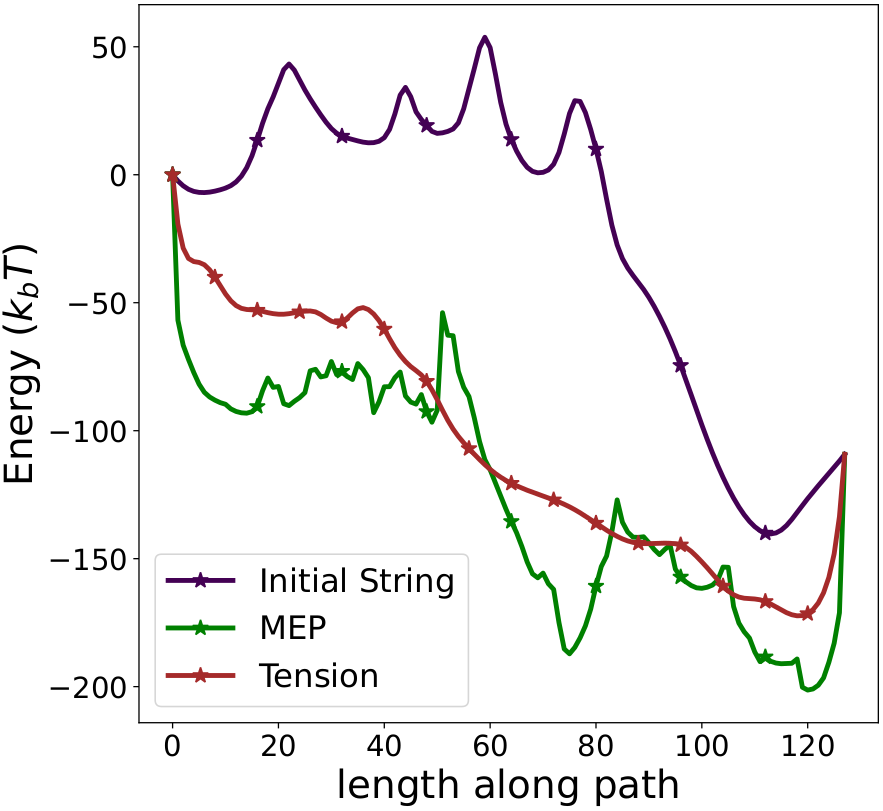

TL;DR This paper introduces a string-method view of diffusion models to study how samples are connected through the learned distribution. Rather than relying on simple interpolations, it computes paths shaped by the score model and compares three regimes: generative transport, minimum energy paths, and entropy-aware or tension-regularized paths.
The main takeaway is that geometry matters. In images, high-likelihood paths can still look unrealistic, while entropy-aware paths remain much closer to the typical set. In proteins, the same framework yields physically plausible conformational transitions from models trained only on static structures.
Understanding the geometry of learned distributions is fundamental to improving and interpreting diffusion models, yet systematic tools for exploring their landscape remain limited.
Standard latent-space interpolations fail to respect the structure of the learned distribution, often traversing low-density regions.
We introduce a framework based on the string method that computes continuous paths between samples by evolving curves under the learned score function. Operating on pretrained models without retraining, our approach interpolates between three regimes: pure generative transport, which yields continuous sample paths; gradient-dominated dynamics, which recover minimum energy paths (MEPs); and finite-temperature string dynamics, which compute principal curves that balance energy and entropy.
For image diffusion models, MEPs contain high-likelihood but unrealistic “cartoon” images, while principal curves yield realistic morphing sequences despite lower likelihood. For protein structure prediction, the method computes transition pathways between metastable conformers directly from models trained on static structures, producing plausible intermediates.
Altogether, the paper establishes the string method as a principled tool for probing the modal structure of diffusion models, identifying modes, characterizing barriers, and mapping connectivity in complex learned distributions.
We adapt the string method from computational chemistry to the setting of learned score functions, making it possible to compute pathways directly from pretrained diffusion models without requiring an explicit energy function.
We compare three complementary regimes: pure transport for generative paths, gradient-dominated dynamics for minimum energy paths, and finite-temperature or tension-regularized dynamics for paths that better reflect the typical set.
We show empirically that entropy matters in high dimension. This is visible both in image morphing, where MEPs can pass through unrealistic samples, and in proteins, where geometry-aware paths lead to smoother and more physically meaningful transitions.
The following figures highlight two central messages of the paper. First, likelihood alone does not necessarily correspond to realistic samples. Second, finite-temperature string dynamics can reveal a more meaningful path through the typical set, and this leads naturally to principal curves that balance energy and entropy.

This figure illustrates the relationship between likelihood and realism in diffusion models. A central observation of the paper is that minimum energy paths can pass through states that are highly likely under the model but still appear unrealistic or overly cartoon-like. In contrast, more entropy-aware paths remain closer to the typical set and produce visually more plausible transitions.

This figure shows finite-temperature walkers together with the principal curve they define. Rather than focusing only on an energy-minimizing route, the finite-temperature dynamics explore a broader region of likely configurations and capture the geometry of the typical set. The resulting principal curve provides a self-consistent pathway that better balances energy and entropy.
The following videos compare three kinds of paths between endpoint conformations: a diffusion-model string, a minimum energy path, and a tension-regularized path. The comparison is shown for both the BBA protein and chignolin.

This figure shows a projection of the chignolin transition path. The projection provides a compact view of how the pathway moves through configuration space and helps compare the geometry of the diffusion-model string with the more energy-driven alternatives.

This figure shows the energy profile along the chignolin path. It helps identify barriers and favorable intermediate regions, and it makes the differences between the three path constructions easier to interpret quantitatively.
This video presents a diffusion-generated string for chignolin. It visualizes the transition proposed by the learned model and shows how the path evolves through plausible intermediate states.
This video shows the minimum energy path for chignolin. It provides a direct comparison with the diffusion-based trajectory and highlights the differences between purely energetic and geometry-aware paths.
This video shows the tension-regularized path for chignolin. The regularization encourages a smoother evolution of the string and makes the sequence of intermediates easier to interpret visually.

This figure shows a projection of the BBA transition path in a reduced representation. It helps visualize how the different string constructions move between the endpoint conformations and whether the transition follows a smooth geometric route through configuration space.

This figure reports the energy along the BBA path. It gives a complementary view of the transition by showing where energetic barriers and low-energy regions appear, making it easier to compare diffusion-generated strings, minimum energy paths, and tension-regularized paths.
This video shows the BBA transition generated directly by the diffusion-model string. It gives a clear picture of how the learned score connects the endpoints while staying aligned with the geometry of the model.
This video shows the minimum energy path for BBA. It emphasizes the route favored by energy-dominated dynamics and is useful for understanding how the pathway changes when entropy is not explicitly accounted for.
This video shows the BBA path with tension regularization. The added tension makes the string evolve more smoothly and often produces a more evenly distributed sequence of intermediate conformations.
Pure generative transport
In this regime, the string evolves according to the generative dynamics induced by the learned score model.
The resulting path gives a continuous transport between endpoints and reveals how the model naturally connects samples.
Gradient-dominated dynamics
When the dynamics are dominated by the gradient component, the method recovers minimum energy paths.
These paths can expose barriers and high-likelihood routes, but in high dimension they may drift toward unrealistic regions.
Finite-temperature or tension-aware strings
Adding entropy or regularization changes the geometry of the path. Instead of focusing only on local maxima of likelihood,
the string remains closer to the typical set and often produces more realistic image transitions and smoother protein intermediates.
@article{moreau2026probing,
author = {Moreau, Elio and Coeurdoux, Florentin and Ferr{\'e}, Gr{\'e}goire and Vanden-Eijnden, Eric},
title = {Probing the Geometry of Diffusion Models with the String Method},
journal = {arXiv preprint arXiv:2602.22122},
year = {2026},
url = {[arxiv.org](https://arxiv.org/abs/2602.22122})
}